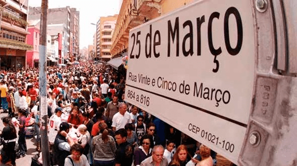

Mercado Municipal
O motivo do tombamento do Mercado Municipal de São Paulo deu-se por se tratar de um bem cultural de interesse histórico-arquitetônico da cidade de São Paulo. Além disso, o Mercadão é um grande centro de abastecimento, e é consagrada referência e espaço de convivência e sociabilidade no centro da cidade.

Parque do Ibirapuera
O Parque Ibirapuera é um parque urbano localizado na cidade de São Paulo. Em 2017, foi o parque mais visitado da América Latina, com aproximadamente 14 milhões de visitas, além de ser um dos locais mais fotografados do mundo.

Rua 25 de Março
A Rua 25 de Março é uma via pública localizada na região central da cidade de São Paulo, SP considerada como o maior centro comercial da América Latina, pois consiste em um dos mais movimentados centros de compras varejistas e atacadistas da cidade.